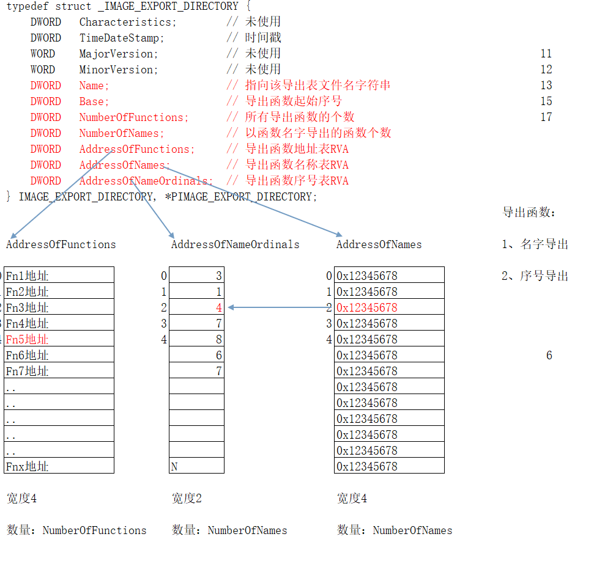
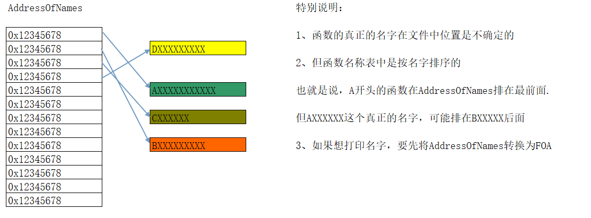
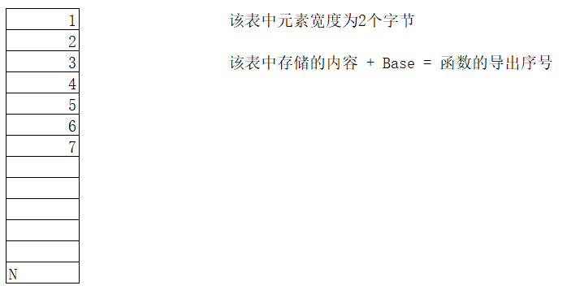
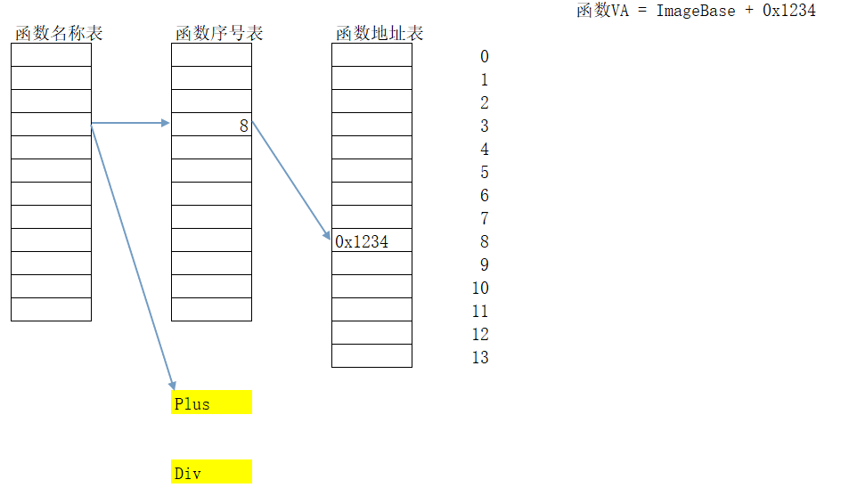
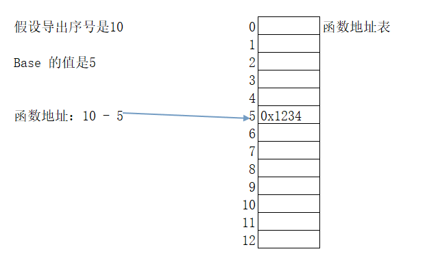
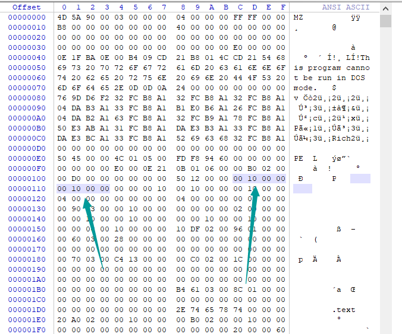
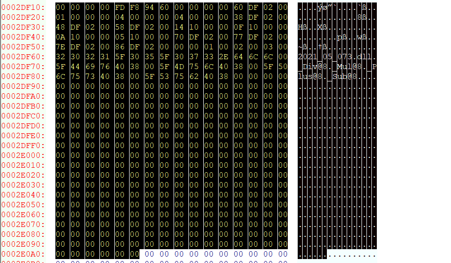

# 如何定位导出表：
数据目录项的第一个结构，就是导出表.
typedef struct _IMAGE_DATA_DIRECTORY { | |
DWORD VirtualAddress; | |
DWORD Size; | |
} IMAGE_DATA_DIRECTORY, *PIMAGE_DATA_DIRECTORY; | |
//VirtualAddress 导出表的 RVA | |
//Size 导出表大小 |
# 导出表结构
上面的结构，只是说明导出表在哪里，有多大，并不是真正的导出表.
如何在 FileBuffer 中找到这个结构呢？在 VirtualAddress 中存储的是 RVA, 如果想在 FileBuffer 中定位
必须要先将该 RVA 转换成 FOA.
真正的导出表结构如下：

- 由函数名字导出函数地址流程
例如：函数名字为 test，先查找 AddressOfNames (导出函数名称表)，这里面存储的是指向每个拥有名字的函数的函数名字的 RVA, 如果表中索引为 2 的地址指向的是函数名字，那么就会用这个 2 查找 AddressOfNameOrdinals (导出函数序号表) 中索引为 2 的值，如果这个值为 4，则会在 AddressOfFunctions (导出函数地址表中) 查找索引为 4 的值，这个值就是函数地址的 RVA。此过程可逆。
- 由序号导出函数地址流程
如果这个序号是 10，则直接用 10 减去 Base 得到一个值，这个值就是 AddressOfFunctions (导出函数地址表中) 中的索引，其对应的值就是函数地址的 RVA。
导出序号表中的值加上 Base 就是 dll 或其他 PE 文件中的导出序号了。
其中 Name 指向的字符串是以 00 结尾的。
Export Table 的偏移量为： e_lfanew+0x078
NumberOfFunction 的值并不准确，它的计算结果为： 最大的导出序号值减去最小的导出序号值然后再加一
# AddressOfFunctions 说明：
该表中元素宽度为 4 个字节
该表中存储所有导出函数的地址
该表中个数由 NumberOfFunctions 决定
该表项中的值是 RVA, 加上 ImageBase 才是函数真正的地址
定位：
IMAGE_EXPORT_DIRECTORY->AddressOfFunctions 中存储的是该表的 RVA 需要先转换成 FOA
# AddressOfNames 说明：
该表中元素宽度为 4 个字节
该表中存储所有以名字导出函数的名字的 RVA
该表项中的值是 RVA, 指向函数真正的名称

# AddressOfNameOrdinals

# 总结：
为什么要分成 3 张表？
1、函数导出的个数与函数名的个数未必一样。所以要将函数地址表和函数名称表分开.
2、函数地址表是不是一定大于函数名称表？
未必，一个相同的函数地址，可能有多个不同的名字.
3、如何根据函数的名字获取一个函数的地址？

4、如何根据函数的导出序号获取一个函数的地址？

# 记一次查找导出表的过程
以滴水教程中的 DLL 为例。
# 查看 SectionAlignment 和 FileAlignment 的值
SectionAlignment： [地址(RAW):0x00000118] [长度:04h] [偏移量:e_lfanew+0x38] [数据:0x00001000] [内存中的节(块"Section")的对齐值,常为:0x1000或0x04.] | |
FileAlignment： [地址(RAW):0x0000011c] [长度:04h] [偏移量:e_lfanew+0x3C] [数据:0x00001000] [文件中的节(块"Section")的对齐值,常为:0x1000或0x200或0x04.] |

发现都是 0x1000 。
# 查找导出表
查找数据目录中第一个结构体的位置
[成员] [地址(RAW)] [偏移量] [数据:RVA] [大小] [说明] [结构] | |
Export Table： 0x00000158 [e_lfanew+0x078] 0x0002DF10 0x00000196 [ 导出表 ] [IMAGE_DIRECTORY_ENTRY_EXPORT] |
可以看到导出表的位置为 0x0002DF10，大小为 0x196

# 分析导出表信息
0002DF10: 00 00 00 00 FD F8 94 60 00 00 00 00 60 DF 02 00 .....`....`?.
0002DF20: 01 00 00 00 04 00 00 00 04 00 00 00 38 DF 02 00 ............8?.
0002DF30: 48 DF 02 00 58 DF 02 00 14 10 00 00 0F 10 00 00 H?.X?.........
0002DF40: 0A 10 00 00 05 10 00 00 70 DF 02 00 77 DF 02 00 ........p?.w?.
0002DF50: 7E DF 02 00 86 DF 02 00 00 00 01 00 02 00 03 00 ~?..?.........
0002DF60: 32 30 32 31 5F 30 35 5F 30 37 33 2E 64 6C 6C 00 2021_05_073.dll.
0002DF70: 5F 44 69 76 40 38 00 5F 4D 75 6C 40 38 00 5F 50 _Div@8._Mul@8._P
0002DF80: 6C 75 73 40 38 00 5F 53 75 62 40 38 00 00 00 00 lus@8._Sub@8....
0002DF90: 00 00 00 00 00 00 00 00 00 00 00 00 00 00 00 00 ................
0002DFA0: 00 00 00 00 00 00 00 00 00 00 00 00 00 00 00 00 ................
0002DFB0: 00 00 00 00 00 00 00 00 00 00 00 00 00 00 00 00 ................
0002DFC0: 00 00 00 00 00 00 00 00 00 00 00 00 00 00 00 00 ................
0002DFD0: 00 00 00 00 00 00 00 00 00 00 00 00 00 00 00 00 ................
0002DFE0: 00 00 00 00 00 00 00 00 00 00 00 00 00 00 00 00 ................
0002DFF0: 00 00 00 00 00 00 00 00 00 00 00 00 00 00 00 00 ................
0002E000: 00 00 00 00 00 00 00 00 00 00 00 00 00 00 00 00 ................
0002E010: 00 00 00 00 00 00 00 00 00 00 00 00 00 00 00 00 ................
0002E020: 00 00 00 00 00 00 00 00 00 00 00 00 00 00 00 00 ................
0002E030: 00 00 00 00 00 00 00 00 00 00 00 00 00 00 00 00 ................
0002E040: 00 00 00 00 00 00 00 00 00 00 00 00 00 00 00 00 ................
0002E050: 00 00 00 00 00 00 00 00 00 00 00 00 00 00 00 00 ................
0002E060: 00 00 00 00 00 00 00 00 00 00 00 00 00 00 00 00 ................
0002E070: 00 00 00 00 00 00 00 00 00 00 00 00 00 00 00 00 ................
0002E080: 00 00 00 00 00 00 00 00 00 00 00 00 00 00 00 00 ................
0002E090: 00 00 00 00 00 00 00 00 00 00 00 00 00 00 00 00 ................
0002E0A0: 00 00 00 00 00 00 ......
数据
->Export Table
Characteristics: 0x00000000
TimeDateStamp: 0x6094F8FD (GMT: Fri May 07 08:23:25 2021)
MajorVersion: 0x0000
MinorVersion: 0x0000 -> 0.00
Name: 0x0002DF60 ("2021_05_073.dll")
Base: 0x00000001
NumberOfFunctions: 0x00000004
NumberOfNames: 0x00000004
AddressOfFunctions: 0x0002DF38
AddressOfNames: 0x0002DF48
AddressOfNameOrdinals: 0x0002DF58
Ordinal RVA Symbol Name
------- ---------- ----------------------------------
0x0001 0x00001014 "_Div@8"
0x0002 0x0000100F "_Mul@8"
0x0003 0x0000100A "_Plus@8"
0x0004 0x00001005 "_Sub@8"